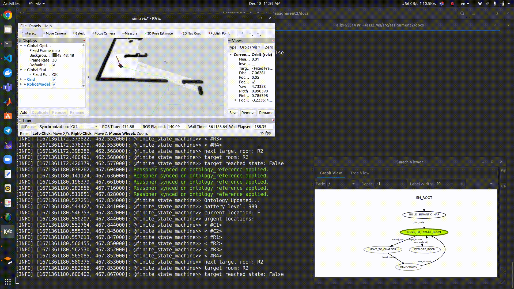
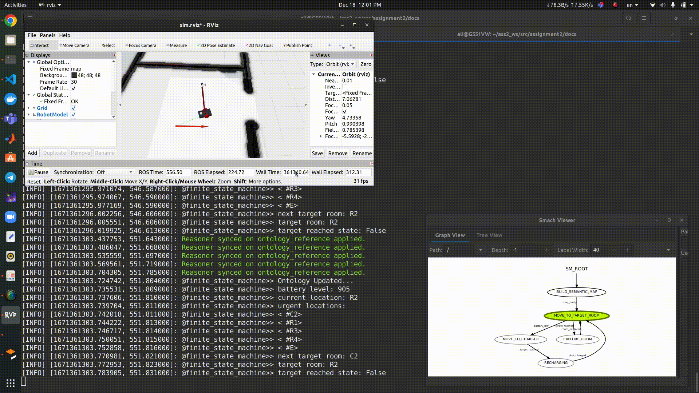
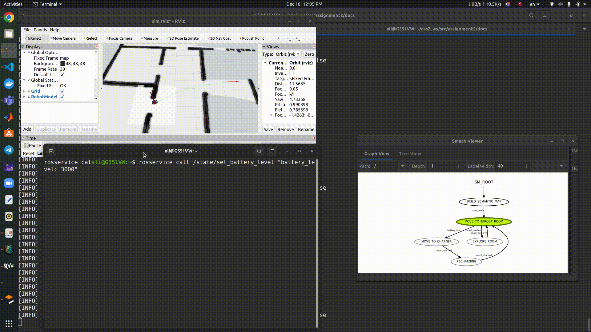

Usage
Installation
This package is based on aRMOR, it has to be installed as it is described in the provided link as a pre-condition for running this package.
It is also depended on smach, it can be installed using the following commands:
$ sudo apt-get install ros-<distro>-executive-smach*
$ sudo apt-get install ros-<distro>-smach-viewer
For image processing part, the aruco_ros and cv_bridge packages have to be cloned and setup.
Regarding the navigation part, slam_gmapping and move_base have to be installed .
Finally, the MoveIt package has to be installed for robot joints trajectory planning and control.
Once the dependencies are met, the package can be installed as it follows:
$ mkdir -p catkin_ws/src
$ cd catkin_ws/src
$ git clone https://github.com/aliy98/ros-moveit-opencv-ontology
$ cd ..
$ source /opt/ros/<distro>/setup.bash
$ catkin_make
Running
In order to initialize the software architucture along with simulation environment use the following commands:
$ source devel/setup.bash
$ roslaunch assignment2 assignment.launch
Then, in another terminal, initialize finite_state_machine node using this command:
$ rosrun assignment2 finite_state_machine.py
Here is the result for the first state while the robot scans the markers:

Once the robot builds the semantic map, it would move to target room as it is shown below:
{kind=link}
When it reaches the target, the state will change to explore room:
{kind=link}
While the robot moves to target, if the battery gets lower than threshold, it will move to charger:
{kind=link}